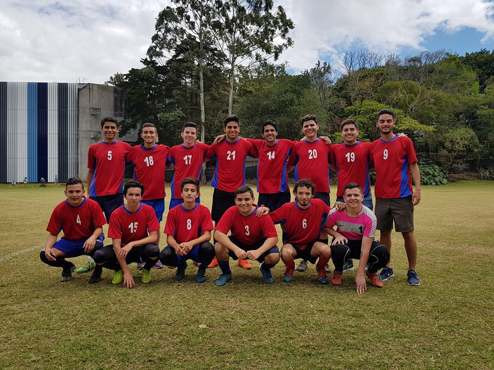

Por qué computación
Desde pequeño tuve una fuerte afición por lo aparatos electronicos, desde los radios y grabadoras hasta
los videojuegos. Conforme pasó el tiempo fui adquiriendo también un pasión por las matemáticas y la lógica.
Cuando empecé a investigar sobre distintas carreras a la hora de entrar a la Universidad me di cuenta que
Ciencias de la Computación era un balance perfecto entre esas dos pasiones que siempre he tenido.

Equipo de Computación Fútbol UCR